来源：https://v1ddbysd810.feishu.cn/docx/I0j4dGG6doI4YFxys5FcNyMpncf
关于高考卖花很久之前在小红书上刷到过
在高考前一两周仅仅只是有过这个念想
但是思维方式任然还是处于固定型思维
还处于想想的阶段，并没有付出任何行动
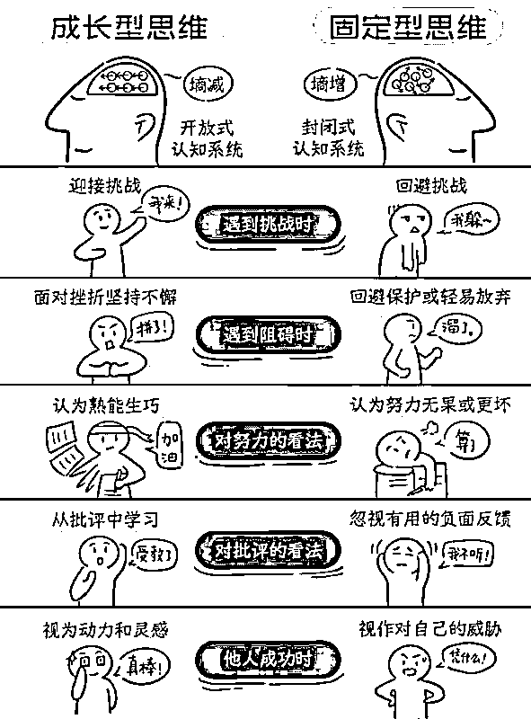
（只能说群里姐妹的图太适用了）
紧接着就在群里看到小伙伴有说到去高考卖花（人真的在一个良好氛围的圈子，会有很好的信息差、行为方式、思维方式等）
我才意识到真正的到了高考季
周五（高考的第一天）
作为打工人还在上班的我马上付诸了行动
直接在知识星球和小红书开始找各种攻略
找到了艾小飞老师的精华帖
【如何利⽤⾼考2天摆摊卖花赚波快钱】
老师的分享可以说是非常的干货
并且有丰富的实操细节，宛如及时雨
我就先进行了学习，飞书文档看了好几遍
结合实际付出了行动，赚到了所谓的快钱
这里也非常感谢艾小飞老师的发享，并经过老师的同意下在他的飞术文档（紫色内容皆是）基础上进行分享和感悟(我的思考)
（艾小飞老师的发享)
⼗⼆年寒窗苦读，就为等待这次⾼考给⾃⼰带来⼈⽣改变命运的机会
不单单是考⽣紧张，站在⻔外等待的家⻓会更紧张
为了缓解这种紧张和祝福⾃⼰的⼩孩⾦榜题名，所以⼼想着要借⽤什么东西来表达这种⼼意
花！就是再合适不过的礼物了！
考⽣紧张的出考场后，⻅到⾃⼰送的惊喜礼物，上⾯还有祝福语的贺卡，⼼情⾃然会放松下来，顺便
拍个照，发圈做个纪念
毕竟⾼考也不是年年都来参加的
所以这就是需求
既然有需求，那肯定会有市场。
同时也会有竞争。
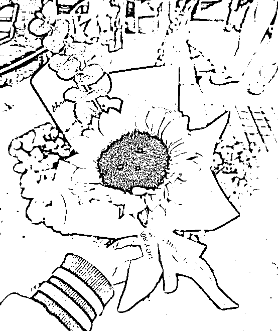
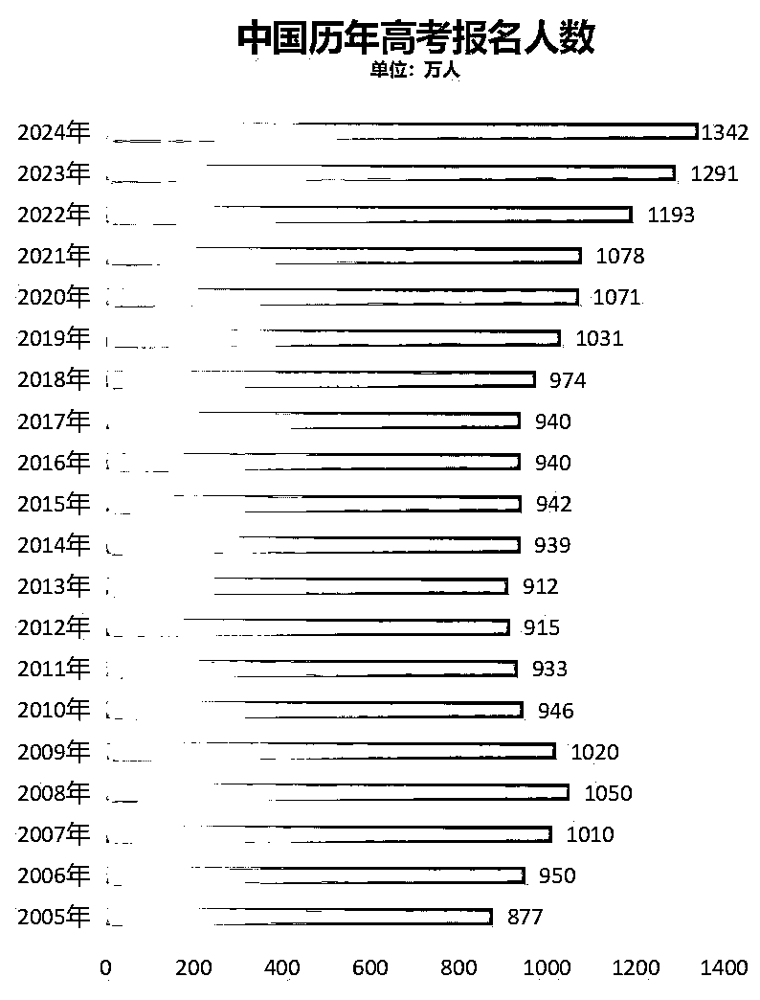
关于客⼾⼈群，有些朋友可能会联想到考⽣错！
考⽣很少会给⾃⼰买花的。
⼀般都是家⻓，准确的说是40-48岁之间⼈群
所以先明确清楚你的⽤⼾是谁
他们是买来做什么⽤的 ？
你才会清楚的理顺⼀整套从进货到销售的完整流程。
这确实是当时的我没有很快反映出来的一件事，在我的实践中有深刻的体会到。
上海最后一天6.9考的是外语听说测试
因为之前完全没有接触过，没有展开了解
导致我对于考试时间模糊不清
错过了最好的售卖时间，早上没有卖出一束花
‼️
这一点也深深的给我自己上了一课
万事开头需要多多了解，不要理所当然
于是乎当天下午场，因为只有四场口语测试，相应的家长少了很多
这就需要我能厚着脸皮穿梭在家长之间询问是否有需求
一开始我还是按照前一天的模式站在那里不动叫卖的方式吸引着家长们上门
当天比较热，也没有带水，导致我的声音也小了，在这个时候其实完全没有用了
因为我一直在同一个地方说这些话术，旁边坐着的家长都看不下去了，她说:你要到他们当中去呀，这里完全不行。
我当即就走了过去，穿梭在家长中，但是没有结果。
突然不知道什么原因，突然来了好几个家长围过来，我想着，怎么这么多人啊，哎呀，是我的金主们来了。给其中一位爸爸灌输情绪价值吧，因为他们家正好也是女儿，疯狂输出，成交了12.11。
推荐3种
寓意“⼀举夺魁”
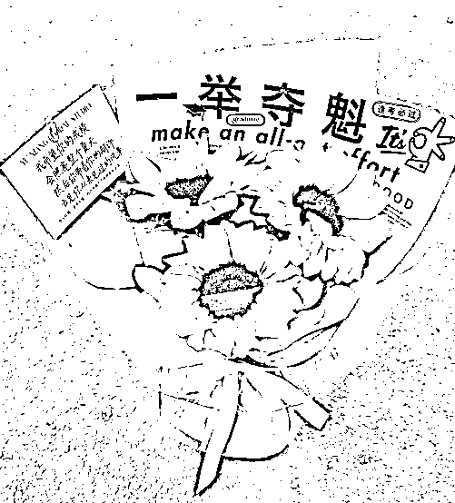
寓意“好运莲莲”
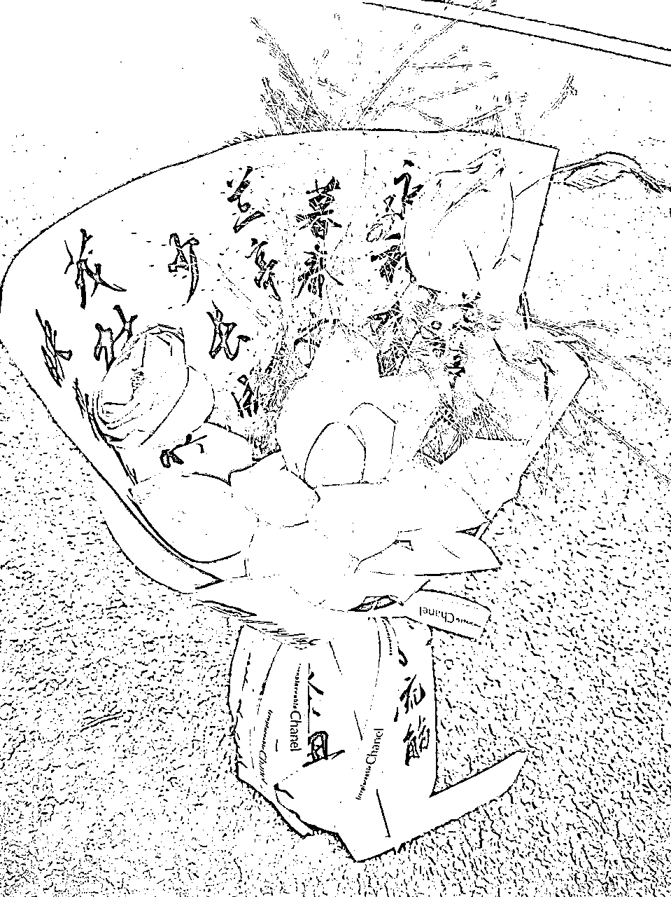
寓意“放⻘松“
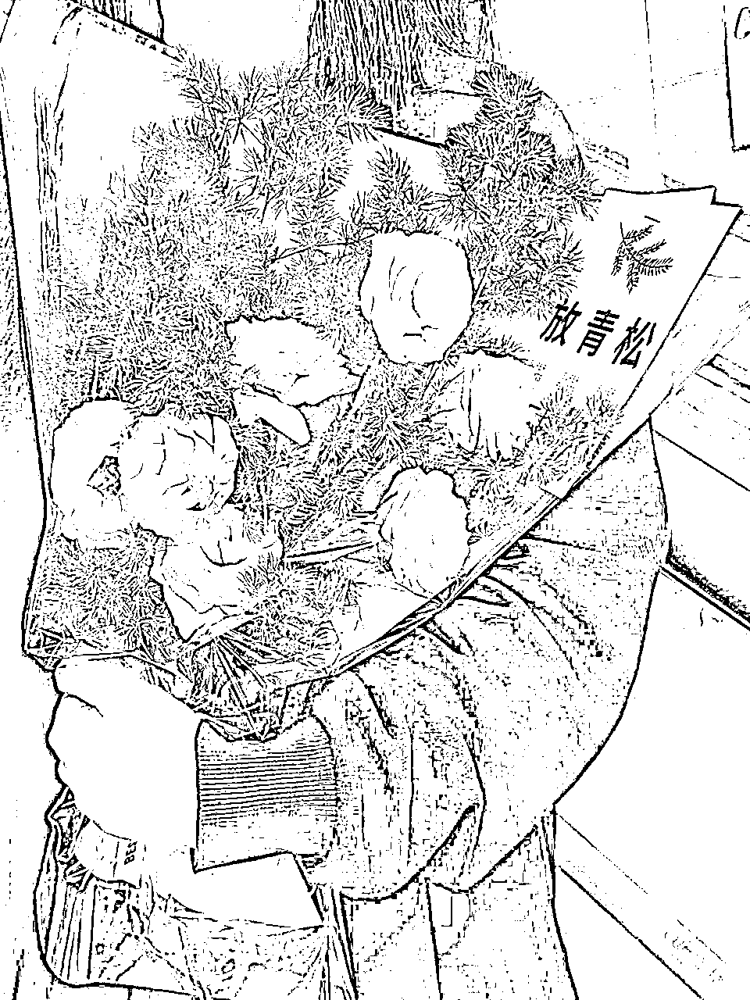
但我更愿意推荐只卖向⽇葵
根据以往的⾼考卖花数据和经验来看
向⽇葵是最畅销的
其他花的品种销量会⽐较惨淡
如果你想稳定的卖完
不想亏在⼿上的话
我建议卖热⻔畅销款的向⽇葵吧
另外也可以准备⼀些配花
像尤加利叶、蓝星花等去搭配主花
参考老师的分享和实际花店的情况
直接就选择了一种——“一举夺葵” 向日葵
搭配尤加利叶、满天星、小雏菊等
有两种⽅式
可以在美团或多多买菜下单，优势是性价⽐⾼且速度快。基本上第⼆天早上就到了
但不建议去淘宝拼多多商城买
第⼀是天⽓闷热，运输途中你很难保障到花收到后是否会损坏，理赔⿇烦，且影响效率
第⼆是运输时间⻓，⼀般要等待3-4天左右，⽬前距离⾼考时间已经不够了
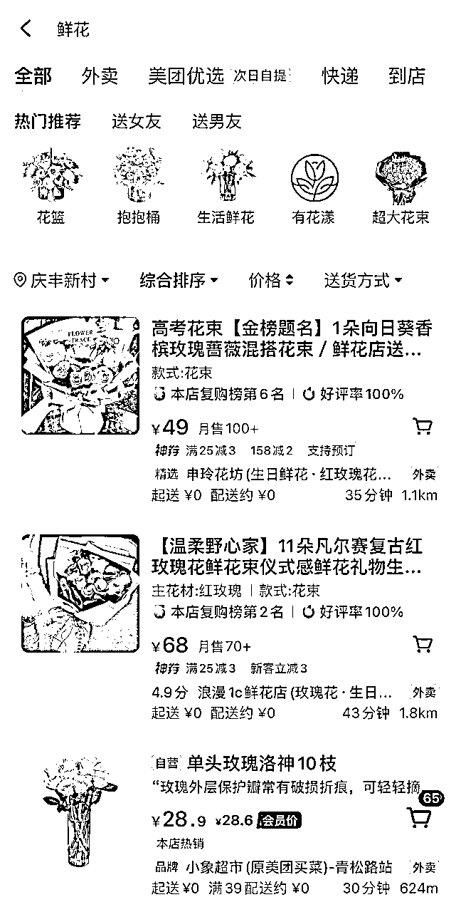
可以去本地找花店，⼀家家的询问价格并对⽐
因为考虑到⾼考期间，花的需求量会上涨，可能会导致部分花的品类价格也会上涨
特别是向⽇葵这类热⻔的花品类，前后⼏天基本上⼤部分地区都⽐较缺货
如果询问的时候，最好多问⼀句，供货量和价格的问题
⽽且要给⾃⼰多备⼏家供货商，以免途中涨价或缺货，就⾮常的被动了！
但花店有个不太好的劣势，那就是价格！
如果你想在本地找价格偏低的，可以去找花卉批发市场
可有些城市是没有花卉批发市场的，但是会有经销商
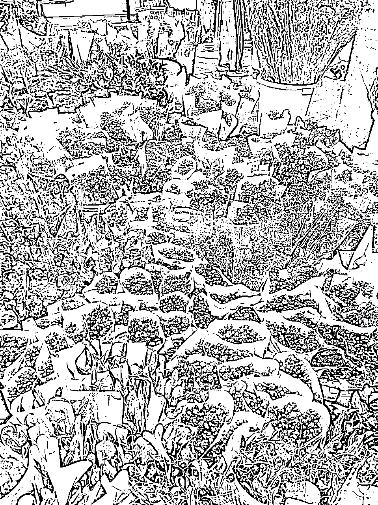
这怎么找呢？
可以厚着脸⽪去问卖花店的，多问⼏家，总有⼈会告诉你的
如果放不下这个脸，也可以去⽹上搜或询问朋友圈的⼈
当时我确实直接选择了线下，对比了三家，晚上就交了定金
进货300⽀就够了，太多了你不好摆，⽽且也不⽅便搬运
我是直接去店里问老板，因为当时她的货源并不多，我当时夸下海口说来50枝吧
付了定金💰，第二天下午实际我拿了32枝
因为不清楚情况，在结束前的3小时前我就到达了战场，当时家长很少，我又傻了
到最后一个小时和没有同行竞争的情况下，家长可以说是络绎不绝全部卖完了
当时因为走得太急，去的太早，我就想着先去卫生间吧
附近真的就是类似工业园区了，没有任何店铺，
我就和我爸（搬花工具人）去了旁边的公司问
我还在卫生间的我爸还给我打电话，我想着干什么，上厕所还不让人安生那
结果出来就是第一单生意，就遇到了传说中的”讨价还价“
最终结果，在一番机智的交锋后，靠着的三寸不烂之舌（下面有我的”对打话术“）
成功地以原价卖出了第一单
以我们⼴西柳州的市场批发价为例
如果购买300⽀起步的话，单只向⽇葵可以压到3元左右，成本预算在900元
第⼆包装费，预计在100元左右够了
第三是⽔桶，如果要买10个的话，预计在100元
第三是零杂⼩碎的物品，⽐如贺卡、喷壶、收款码等这些，100元内搞定了
如果按照向⽇葵单⽀成本是3元来定价的话
单⽀定价9.85，定这个价的⽬的有两个
第⼀是作为引流品，来吸引⽤⼾来围观
可以利⽤从众⼼理来引发蝴蝶效应
第⼆寓意好，985是啥意思，你们都知道的吧
两⽀+尤加利叶定价21.1，寓意考上211学校
6⽀整束+配花，定价98.5，这个才是利润款，⼤⼒主推这个就⾏了。
因为时间紧迫，当时是高考第一天了
各平台买花的时间、预算、质量等各方面都不太符合
当即在周五中午午休时间
我就公司附近找了几家花店去询问价格
最近的行动力很up！！！
一共找了三家：
①家-单枝💰28 两枝💰36 三枝💰46
PS:当时我就傻了，怎么这么贵，小红书上我看到进货价在💰3，高考溢价会在💰6以上
然而实际到了店里问到了这个价格有那么一度我是想放弃的
②家-单枝💰8 两枝💰18 三枝💰28
③家-单枝💰9-10 两枝💰14（简装）-25（精装） 三枝💰38
对比三家，②家的价格是相对符实惠的
回到工位我就开始计算我成本以及利润问题
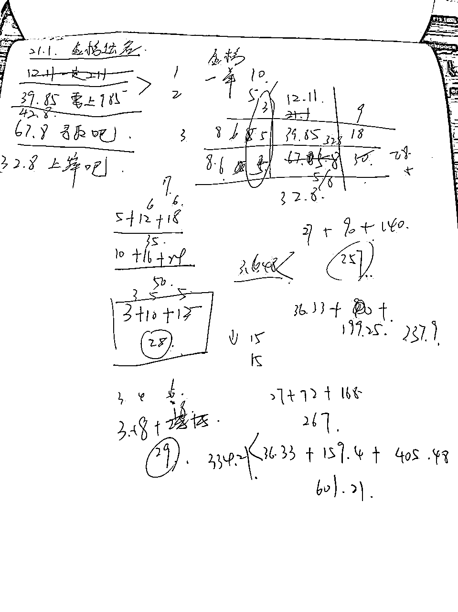
(忽略我过分潦草的字迹)
经过实际情况和店铺给到的价格
单⽀定价9.85，这个引流品，
真的只会是引流款了，完全没有什么利润
我又结合在小红书的搜索，
利用高考花束寓意重新来定价格💰
单枝💰12.11 寓意：一定211
两枝💰39.85 寓意：上985
三枝💰67.80 寓意：录取吧
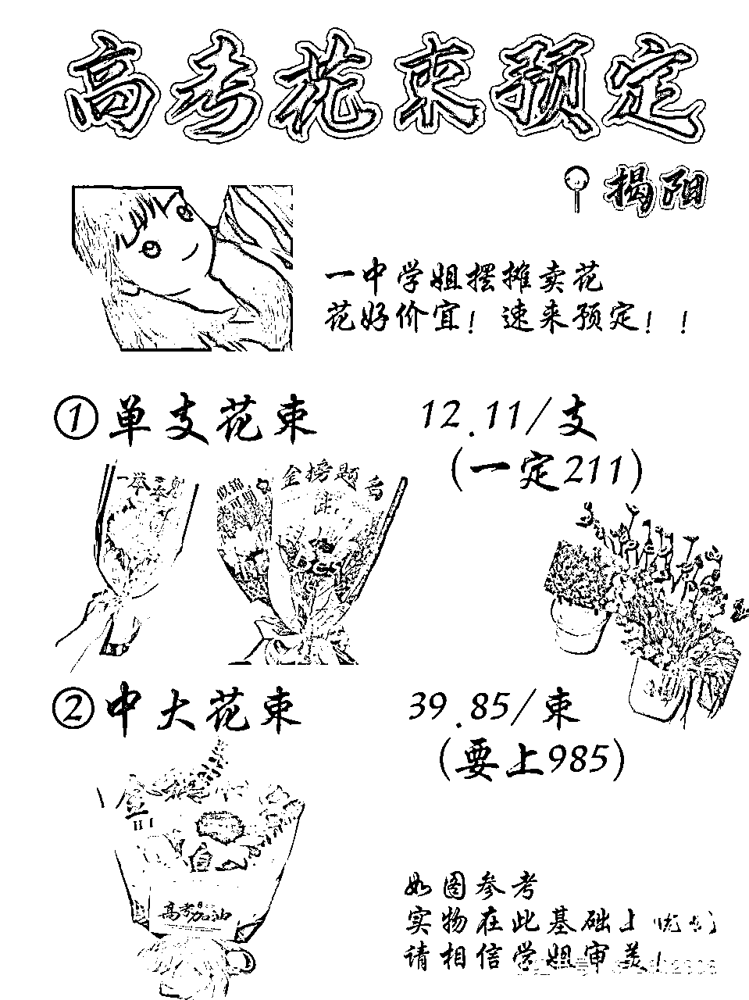
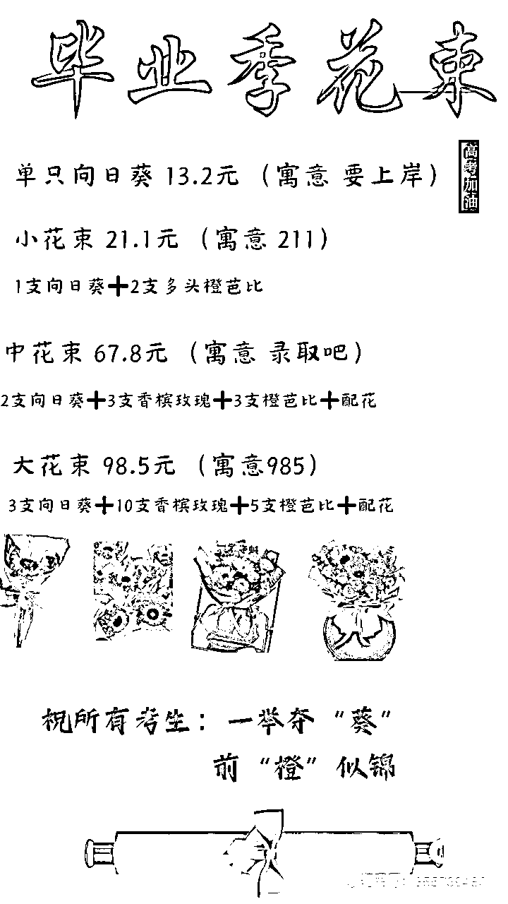
要选择在你们当地有名⽓的学校⻔⼝或对⾯⻢路
这⾥有个注意的地⽅，那就是是否能摆摊
因为⾼考当天，会有警察和城管维护秩序，需要提前踩点
多选⼏个点作为备⽤，万⼀不能摆，⻢上转移位置，以免错过最佳卖花时段
切记：别选在垃圾桶旁边，哈哈
确实会有一些城管来说不可以摆摊
但是当时我拿的货太多一个根本走不了
原本想着等他们再回来帮我搬去车站的
结果他们兜了一圈就走了
最后冲刺一小时，他们虽然来了，但没有赶走我，就让我收拾一下（万幸那，又碰到了心软的神)
但是最后一天有两个城管超级凶，一直盯着我走，然而那时候考试差不多都结束了
早上⾸场考试结束后
第⼀天上午考完试后
这时候家⻓和考⽣状态还是⽐较紧张的
也愿意花点钱图个好兆头
拍个照啥的，发圈纪念下
⽽且有些家⻓去接学⽣的时候都⾃带花
那么不带花的多少有点⼩尴尬哈哈
看到别⼈⼩孩有的，⾃⼰⼩孩也要有
这个结合当时的情况以及和家长的交流中
我发现每一场考完之后其实都有商机
最好的时候应该是每天的最后一场
特别是大三门的最后一场
家长们蜂拥而至，一会就卖光了
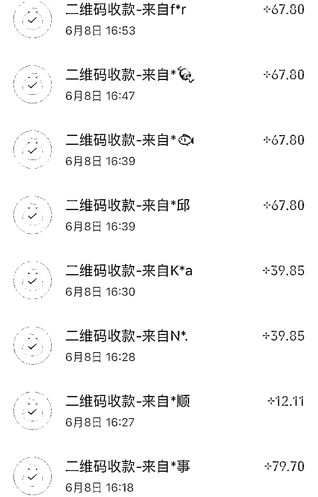
(感叹‼️最后半小时真的很可以)
花个⼏块钱，要提前去⽂印店，打印⾃⼰微信和⽀付宝的收款⼆维码
如果想把客⼾引导到⾃⼰的私域微信上，⽅便⼆次转化，可以再加上加好友的微信⼆维码
以免急忙中慌乱了⼿脚，也影响到⾃⼰的做事效率
一定要提前准备，哪种形式都可以
可挂牌子、手工DIY等，主打一个怎么方便怎么来
有些城市当天可能会⽐较热，花会容易蔫下垂。
可以准备⼩喷壶浇在花瓣上，显得好看同时，还 能“延续⽣命时⻓”
可能有些花枝过⻓或不好看，需要临时修剪掉
可以在花店或⽂具店⾥买些⽜⽪纸或透明纸来⾃⼰包装
可以去菜市临时买⼏个⽔桶回来，要不你花没地⽅放对吧，直接摆在地上显得不雅观。
实在不⾏，买⼏个好看的垃圾桶也⾏，优点是便宜
这些桶⾼考两天⽤完后，可以挂在闲⻥转转上卖，哈哈
⽤不到的东西就⼆⼿卖！这点不能吃亏了
老师说的真的好实在哈哈，确实，
如果你有小推车什么好看得装备可以不用这个，不过不影响大局
花店老板直接借了两个大红塑料桶给我
一桶大概可以装5-6束
太过于拥挤可能会压倒花
不然后面卖的时候特别不美观
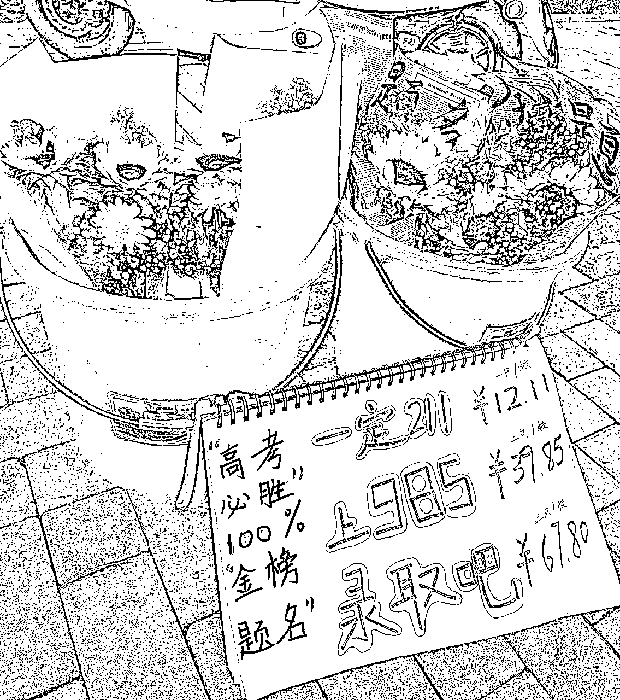
(你别说 这个大红桶还挺醒目)
现场需要摆放个桌⼦，如果家⾥有⼩的折叠桌就最好了
由于没有车，我都是坐公交来回（减轻成本），所以没有带（哦！我也没有呀）
这个可以给家⻓写，也可以⾃⼰写
如果是⾃⼰写的话，需要提前在⼿机备忘录⾥，⽹上搜集关于⾼考的祝福⽂案
⼩红书知乎上很多的，⼀搜就出来⼀⼤堆了！ 切记⽂案字数别过⻓
我简单的找了一些文字
确实可能会存在这个需求
最好尽量让家长写，不耽误自己的时间。
不过我也准备了上面直接有字的小卡片
老板那居然有，然后直接给我了，心软的神
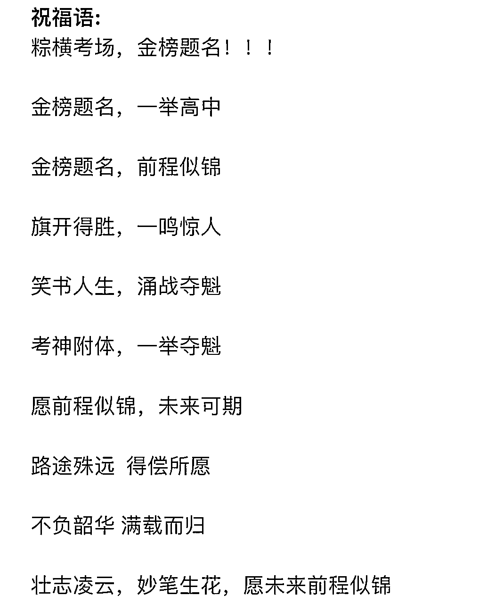
可以找⼀块加厚的废纸⽪
(如果没有可以去废旧回收站花1元购买)
在纸⽪⼲净的那⾯，⽤⻢克笔写上⽂案。
⽐如：鲜花，xxx元。
如果你不想标价格，也可以写好听的祝福语，但⽂案别太⻓
最好要⽤两种不同颜⾊的笔来写
艺术生必备的速写本
（我的老摆摊广告牌了）
简单的设计布局了一下版面
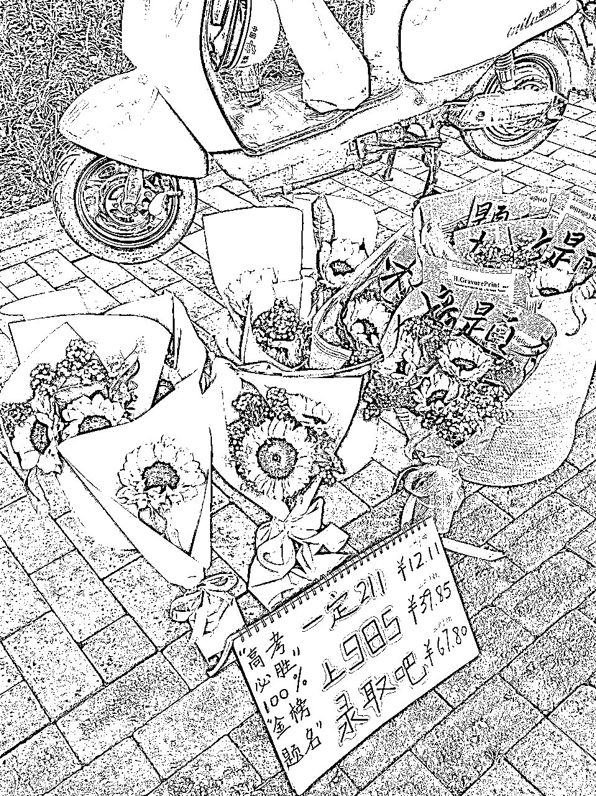
这个是消耗品，可以多买两个作为备⽤
实际没有用到，根据需求带
可能有朋友会有疑问
万⼀家⻓跟你砍价了怎么办？
这⼤概率是不会的。
家⻓看到这个价格的寓意，也乐意接受这个价
⼀般会很少有⼈跟你砍价的
这点不必过多担⼼
确实会有，遇到了几个，不过一定要镇定
我的一些对打话术：
PS:还挺成功，没有砍到价。
然而少许的关于花的理论知识要知道一些
①看一下这些寓意都特别好是不是 211 985，对吧
②这个花都是新鲜刚来的，早上刚包装起来的，你看开的都这么大了
③这个底下是有花泥的，就这个样子，可以保湿2-3天的
④这个都是书法手工写的，很有寓意的
我可以临时给你编个话术，不⼀定全对或合适你的哈
你可以作为参考的⽅向，过后还需要再改编⼀套属于⾃⼰的话术
——“叔叔/阿姨你好，这些花都是刚采摘过来现场包的，很新鲜，可以送您⼩孩，希望他⾼考⼀举 夺‘葵’，⾦榜题名！你看看需要哪束呢，我帮你装上吧。”
——“这个价格是不贵的，98.5元代表的是作为你对⼩孩的⼼意，通过送花你也希望让他能缓解紧张的⼼ 情，争取考个985，⼀举夺‘葵’！对吧，寓意很好的，看中哪束了，我给你包上吧”
看到路过或眼神⼀直望着你这边的家⻓，可以⽤打招呼的⽅式，来吸引家⻓
因为他们在⻔⼝外⾯等2个多钟是⽐较⽆聊的，你主动的去跟他们聊聊天
说不定顺便还能买个花，家 ⻓都是很好说话的
遇到前来购买的家⻓，要表⽰礼貌和嘴甜，多说些感同⾝受的话，
因为⾃⼰的⼩孩⾼考，他们也会紧 张，多说些好听的话，让他们也别那么紧张
因为⼀个好位置，会直接的决定你的客流量。
如果去晚了，位置离校⻔⼝较偏远，那会很影响到你的花束销量
尽量选在有树遮挡的阴凉处，毕竟花被暴晒2个多⼩时也是会蔫的
可以在⽔桶⾥加些适量的⽔(小喷瓶的作用来了)和⼏滴84消毒液，保持花的新鲜度
哈哈这个问题我还没遇到过，如果所剩不多还有⼏⽀的话，可以送给朋友或⾃⼰拿回家养着
如果剩余的数量多到不知该如何处理了，我可以建议你在朋友圈便宜卖了，或者在闲⻥上低价卖。
尽量要挽回⾃⼰的成本损失，别让⾃⼰亏得太离谱了
之前说了由于我对于考试时间模糊不清
错过了最好的售卖时间，
最后还是剩余了四把花束没有卖出去
和花店对接的时候也确认过
对于售不完的花束，他们是不会二次接收的
所以只能自己处理
好心的老板看我剩下了四束
在成本的基础上-30，
于是我就拿一把给老板，也是个美好的祝愿
剩余的三束带回了家自己养
所以合影只剩了三束
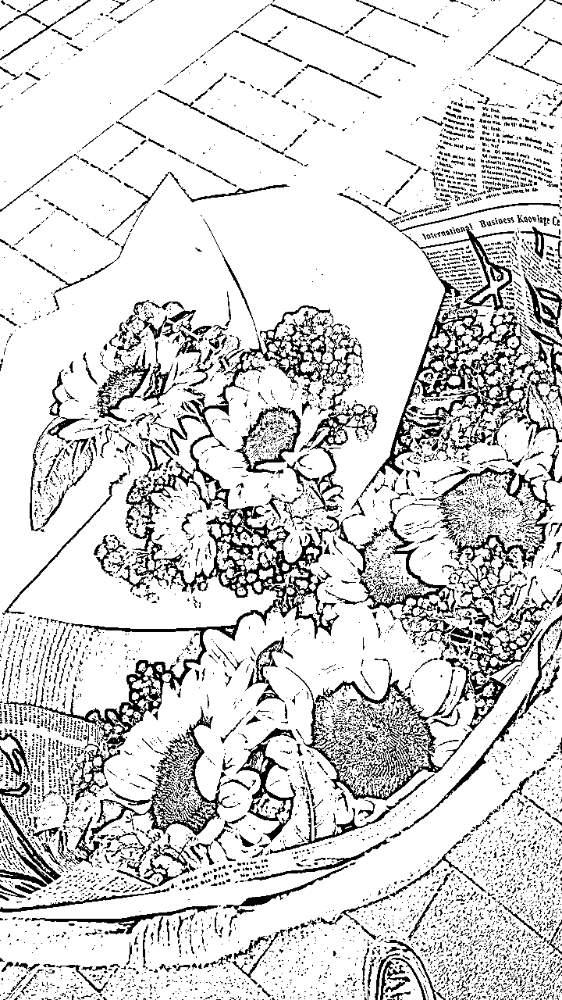
（蓝色的满天星，我和老板第二天的想法）
（以前一直以为有颜色的满天星都是可以种植出来，啊，原来的喷出来的呀，知识又以奇怪的方式进入脑子）
这个能减少你的损耗成本，同时多扩⼤了你的⼀个销售渠道
说不定你的朋友看到你在卖花，虽然他不需要，也许可以推荐给他的⾝边朋友
闲⻥也是个流量⼤的销售渠道，选⼏张好看的花束照⽚，提前⼀两天发布
可以借⽤⾼考的⽹络热点，进⾏现场卖花直播
直播教他们如何卖花，如何选花
或者聊聊⾼考之间的话题，借此能快速涨粉
且都是本地的家⻓粉，账号后续还可以做其它的变现
可以把你从有⾼考卖花的想法，到最后摆摊的经历，写成笔记发到⼩红书上
像这类的内容是很受欢迎的，特别是⼥⽣卖花！
涨粉了后续也可以做其他的变现
当有家⻓向你卖花时，可以有意的提⽰让他加你的微信
⽅便后续还有其他的节⽇，也可以订花，进⾏⼆次转化
可以做个加微信⼩活动
例如：加好友可以送个xxx⼩礼物
（这个礼物可以是⽜⽪笔记本，颜值⾼的笔）
确实当时准备的比较匆忙，没有考虑到这么多层面的解决方式。
更多的是完成0-1的变现方式，那接下来更多的是对0-10的变现方式模式的探索。
关于赚钱
不要指望着单靠这次卖花，能赚多少钱，把⼼中的期望值降到最低
关于⼼态
能赚那肯定是好事，如果赚不到⾃⼰理想中的业绩，也别灰⼼，就当做是个玩玩咯，没什么的
千万不能因为亏了钱，⽽质疑⾃⼰的能⼒。失败的事常有，⼼态放好了才是最重要的，对吧
整体而言成功的一次摆摊经历
可以说是有惊无险，同时我也获得了一些感悟
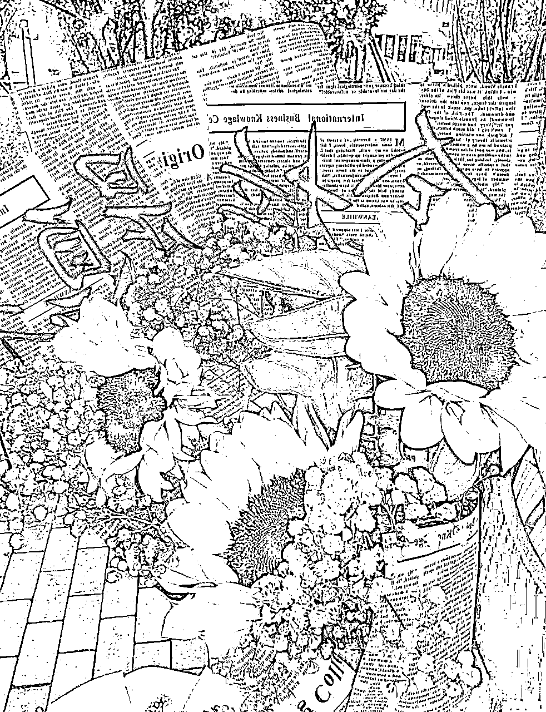
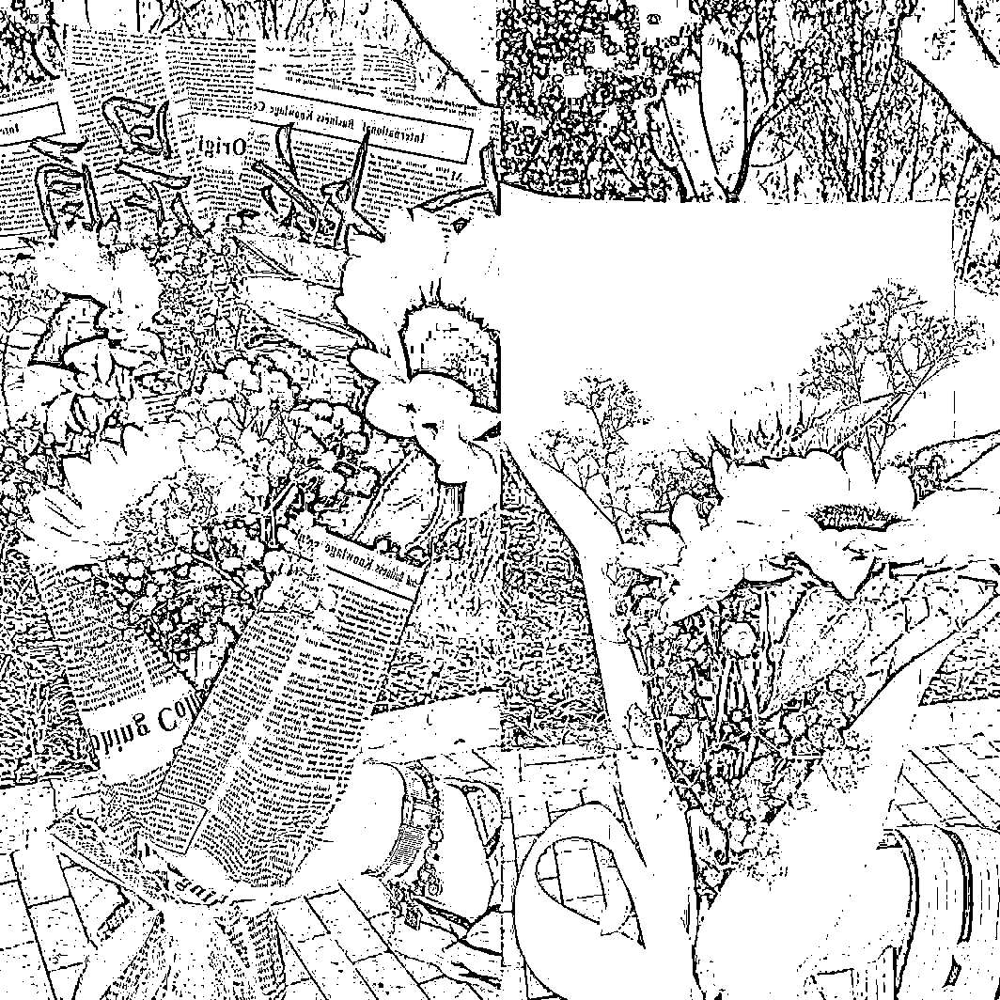
(超好看的搭配 而且每束都不一样)
最后，祝你，也祝我，旗开得胜，一举夺“葵”
让我们一起在生财的路上不断前行，不断学习，不断成长
愿每一位圈友都能在这个充满机遇的时代，找到属于自己的财富密码